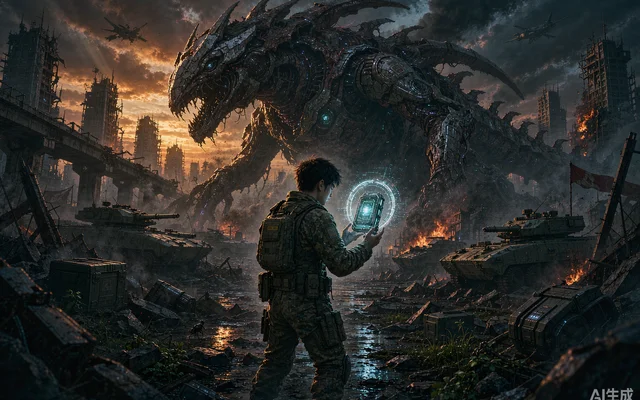
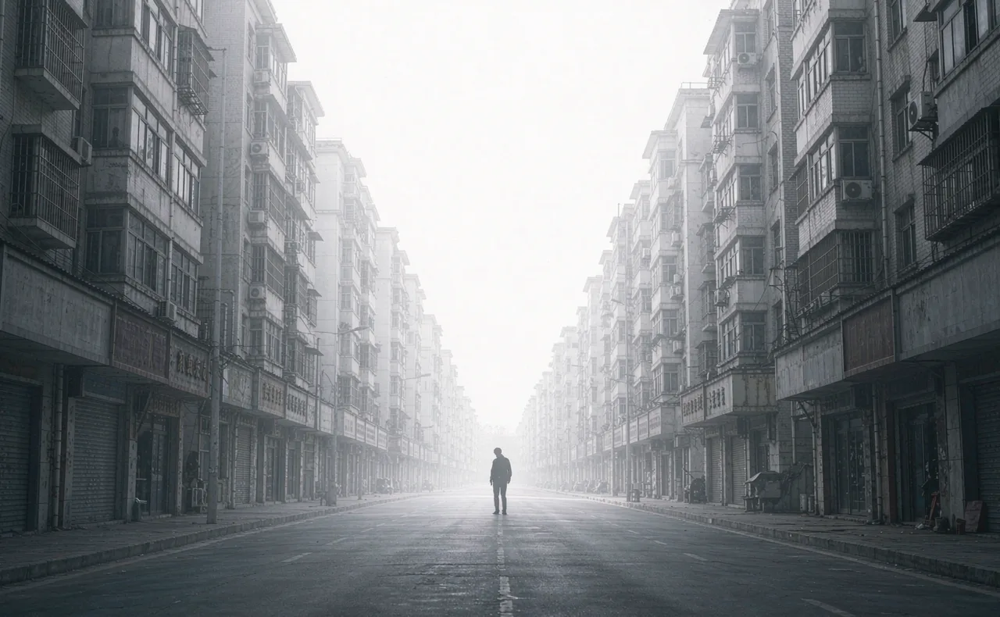
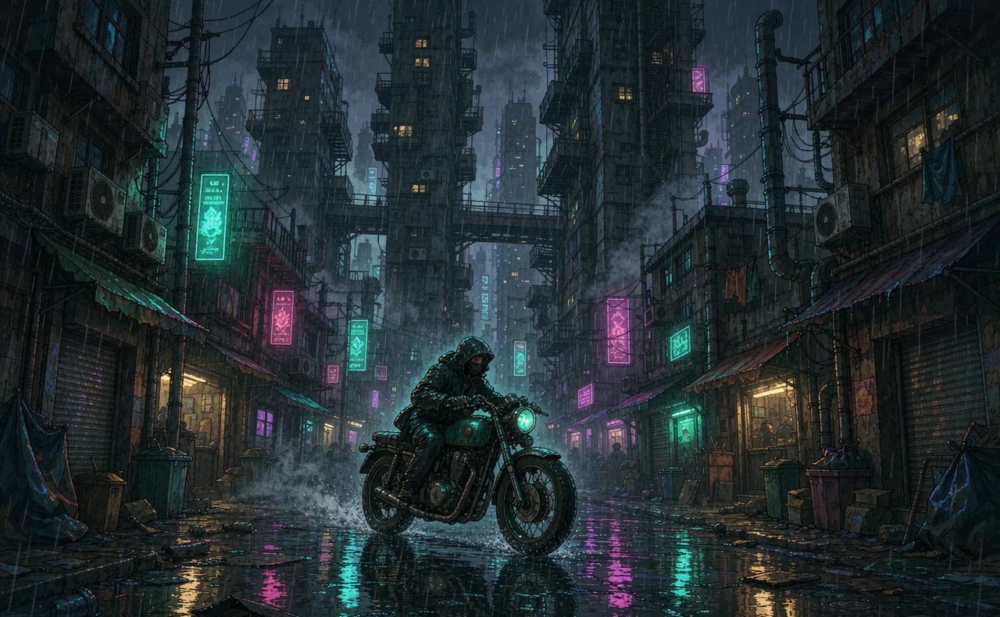

编辑选片概念封面
编辑选片概念封面
AI 电影线上影院 · 放映筹备中
好看的 AI 影像，
从这里发现。
40 分钟内的优质 AI 电影，计划按部购买。
先从免费原作发现故事，认识创作者。
首批关注小红书抖音哔哩哔哩
编辑选片概念封面
新片、热度与口碑，各有一份片单。
从榜单开始看
每日更新
新收录今天核实并收录的作品。
开启 JavaScript 查看今日收录。
近期热门
近 10 天按本站「前往原作」的去重跳转次数排名。
正在加载近 10 天原作跳转。
同一访客每部作品每天计一次，不代表实际播放量。
口碑高分
看过的人说了算站内均分 8 分起，至少 5 人评分。
站内评价加载后显示，编辑评分单独保留。
按评分与人数加权排序，减少少量满分的影响。
榜单怎么更新？
新作品核实后进入片库，更新榜随收录日期排序；近 10 天热门榜暂按本站原作链接跳转次数排序，同一浏览器每部作品每天最多计一次；口碑榜随站内评价更新。当前试行至少 5 人、均分 8 分的门槛，榜单不受付费推荐影响。
外链精选与未来的授权放映分别标注。单片购买和创作者分成正在筹备，当前原片仍免费前往原平台观看。
找一部，值得看的。
探索片库
12 部公开精选
已收录 12 部 · 正式评分陆续补充
 免费精选13:46
免费精选13:46
奇幻 / 武侠待评
相骨
人类少女误入兽人国度，伪装成白狼混进酒馆，盗走神器「相骨」，引来夜爪会与一位斗笠柴犬侠客的追杀。
从兽人国度、神器与追逐展开的东方幻想故事，适合关注原创世界观与角色设定的观众。
第 01 集
 免费精选05:37
免费精选05:37
科幻 / 异星生态待评
烬海棠
勇敢号抵达代号 TW-17 的烬海星。中国科考队带着动物机甲搭档登陆，采集土壤、水与植物样本——第七十三次外星生态先遣探测。
以科考队、动物机甲和异星生态组织故事，适合关注科幻场景与生物设计的观众。
序章「勇敢号」
 免费精选04:48
免费精选04:48
仙侠 / 御兽待评
燕然
大唐安西元年，西域燕然城召开万灵大会：魁首十人将代表大唐进入安西灵境，角逐仙道至尊。一只会法术的兔子「咔咔」与它的主人也来了。
从少女与灵兽搭档切入仙侠冒险，适合关注东方幻想、角色关系与连载故事的观众。
第 01 集
科幻 / 寓言待评
牌子
现实中突然出现一块块「说到做到」的警示牌：违反禁令的人原地消失，月球上的「三不猴」警示牌让人类失去语言、知识随之坍塌。在巴别塔式的困境里，人们用 emoji 重新学会沟通与团结，最终飞向火星，推开那块源头的「?」警示牌。
把「过分诚实」写成一场全球寓言，设定干净、节奏利落，获 B 站首届 AI 创作大赛开放赛道一等奖；适合关注创意设定与荒诞幽默的观众。

免费精选20:59概念封面科幻 / 军事待评
1999·未被抹去的记忆
1999 年外星入侵决战后，人类启动全球记忆抹除；少年阿明靠战友托付的「记忆守护装置」成为唯一保留战争记忆的平民，十五年独自坚守秘密，最终在晶体影像中读懂牺牲的意义与和平的重量。
二十分钟内完成战争、记忆与传承的完整叙事，B 站上线 24 小时登上全站热门、播放破百万，获香港国际 AI 电影节金帧奖提名；适合喜欢硬核科幻与家国叙事的观众。
志怪 / 国风待评
百姽录
单元式国风志怪系列。首集《狐仙接亲》重构狐仙传说：被「抢走」的女孩，实则是自己逃离了现世的牢笼，借一场狐仙接亲迎来新生。片中一百多种服饰头饰形制取材博物馆、古画与复原汉服。
一集一诡事，写女性的自主与互相托举；获 Shotlab 无限世界赛评委选择奖，中式审美与非遗元素扎实，适合喜欢国风志怪与服饰考据的观众。
第 01 集《狐仙接亲》
奇幻 / 动画待评
烟花开在海的背面
海的背面生活着一群不为人知的生灵，「我」误入其中，要如何逃出这里？奇幻世界与现实之间隔着一条若隐若现的交界，烟花在两个世界同时盛开。
Hishorts!×updream AI 短片大赛剧情单元作品，十五分钟保持明亮通透的幻想质感；适合关注原创世界观与治愈表达的观众。

免费精选09:07概念封面
免费精选09:21概念封面原片在作者发布的平台观看，可能需要登录原平台。
推荐一部好作品为一个好故事，买一张小票。
单片观影，支持创作
免费发现
现在就能看从公开作品里，找到想继续关注的创作者。
- 浏览作品介绍、榜单与站内评价
- 前往原平台观看免费原作
- 收藏喜欢的作品，留下观影感受
单片观影
拟定 3 元 / 5 元为一部经过审片的完整 AI 电影买单。
- 聚焦 40 分钟内的优质原创电影
- 购买后，在作品授权期内反复观看
- 每笔有效购买，为创作者记录收益
尚未开放购票，站内放映与订单服务筹备中；上面的购票按钮只演示界面状态。
当前免费作品在原平台观看。未来购票解锁本站授权正片，购前展示价格、授权期和观看范围。我是创作者
已购影片与授权状态
我的影院
真实购票、授权放映与订单记录均未接入。下面只演示「未登录 → 未购买 → 支付中 → 确认中 → 已购有效 → 退款／到期／下架」这些界面状态，不收任何费用，也不产生真实权益。
创作者发行
把你的 AI 电影，
放上帧选银幕。
面向 40 分钟内、具备完整故事与视听完成度的原创 AI 电影。未来通过创作者工作台投稿、管理作品，并查看每笔有效订单产生的收益。
创作者工作台尚未开放；当前可通过邮箱交流作品合作。
交流作品合作你的作品，每一份支持都有记录。
投稿并确认授权
提交完整成片、试看、作品物料与授权资料。
审片通过后上架
核实故事、画面、声音和完成度，再确认价格与放映授权期。
按有效订单记录收益
每笔有效订单按约定比例计入创作者收益，退款与结算状态单独列明。
尚未开放创作者发布、收款或收益结算。分成比例与结算周期将在开放前明确。
热度帮助发现，质量决定收录。
每次推荐，都有理由。
关注热门，也给高质量的新作留位置。
粉丝多少，不是作品进入片库的门槛。
创意与表达
有明确的想法，让画面表达一件值得说的事。
画面与镜头
构图、光影、连续性与剪辑，共同服务于作品。
声音与完成度
按作品类型看声音、节奏与整体表达，不只看一张漂亮截图。
关于帧选
帧选 Framepick 正在筹备 AI 电影线上影院，聚焦 40 分钟内的优质原创电影，连接观众与创作者。
当前先提供免费原作发现，关注小红书、抖音与哔哩哔哩；单片观影、创作者工作台与收益结算将分阶段建设。
关于作品与来源
版权归创作者与原平台所有。当前提供索引与介绍，不提供视频下载或转存；未来站内放映需取得相应作品授权。
当前封面为按作品调性重绘的概念图，并非官方海报；官方物料以原平台为准。来源与评分信息以实际核实情况为准。